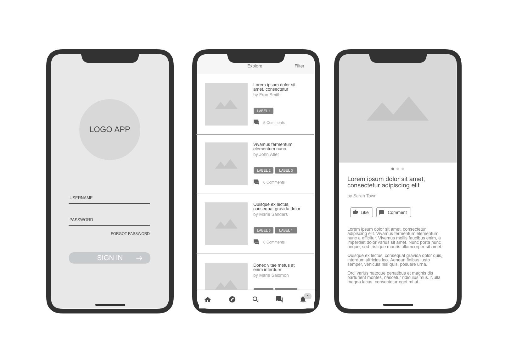

Site Name
Name: Bolivia Tourism Guide
Reason: This name was chosen because it directly describes the primary objective of the website, which is to guide travelers through the culture, gastronomy, and breathtaking destinations of Bolivia, with a special highlight on Cochabamba.
Site Purpose
The purpose of this website is to provide potential tourists and local visitors with reliable information about top travel spots, local food recommendations, and cultural events across Bolivia. It serves as a central hub for planning unforgettable trips.
Scenarios
- What are the top must-visit attractions and traditional dishes in Cochabamba?
- How can I organize a multi-day itinerary to explore Bolivia's most popular tourist destinations?
Color Schema
The selected palette reflects the warmth, nature, and cultural heritage of Bolivia:
- Primary Color (Deep Burgundy - #6B1D2F): Used for primary headers, navigation backgrounds, and key emphasis elements.
- Secondary Color (Warm Beige - #FDFBF7): Used as the main document background to create a clean and readable reader experience.
- Accent Color (Golden Amber - #D4A373): Used for borders, link states, section accents, and footer backgrounds.
Typography
The typography choices ensure clarity and modern design consistency across all screens:
- Headings Font: 'Roboto', sans-serif. Applied to all heading tags (h1, h2, h3) to give structure and clear visual hierarchy.
- Body Font: 'Open Sans', sans-serif. Applied to paragraphs, list items, and standard body text for high readability.
Wireframes
Below are the structural layout sketches for the homepage design across different screen viewports:
Mobile View Layout
